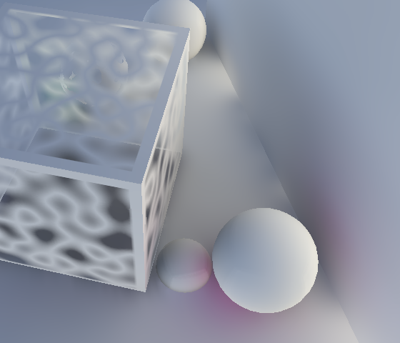
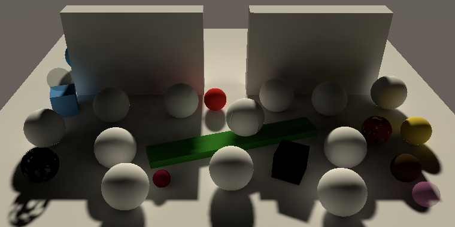
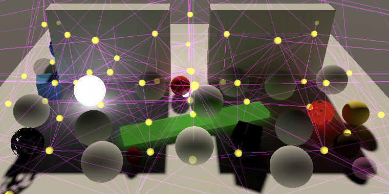
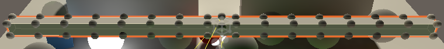
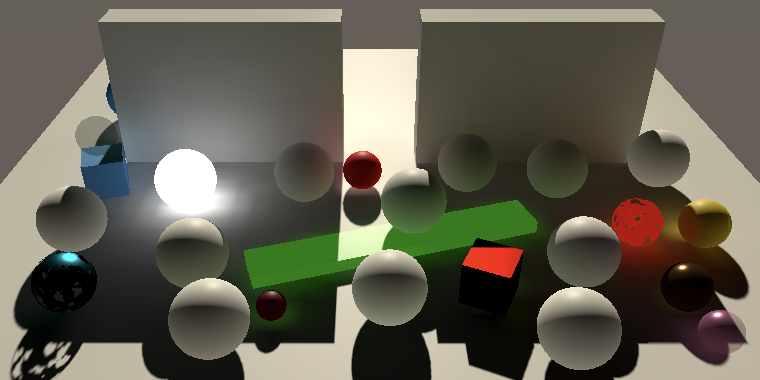
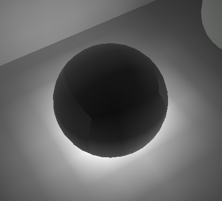
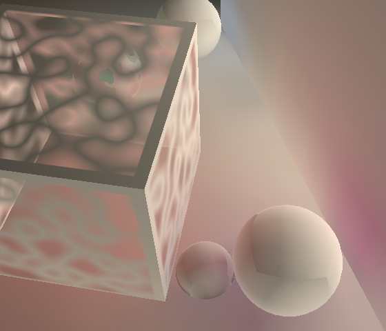

Global Illumination
Indirect Lighting
- Bake and sample light maps.
- Show indirect light.
- Create emissive materials.
- Sample lighting via probes and LPPVs.
- Support precomputed realtime global illumination.
This is the eighth installment of a tutorial series covering Unity's scriptable render pipeline. It's about supporting both static and dynamic global illumination.
This tutorial is made with Unity 2018.3.0f2.
Light Maps
Realtime lighting only deals with direct light. Only surfaces that are directly exposed to a light are brightened by it. What's missing is the indirect light, caused by light traveling from surface to surface, and finally to the camera. This is also known as global illumination. We can add this light in Unity by baking it into light maps. The Rendering 16, Static Lighting tutorial covers the basics of baking light in Unity, but for the legacy pipeline with the Enlighten lightmapper only.
Setting the Scene
It's easiest to see that there is no indirect light by having only a single directional light in the scene. All shadowed areas will be nearby black.
Some very big shadows make this more obvious.
We can still see the objects inside the shadows because specular environment reflections are added to the direct lighting. If there are no reflection probes in use then we'll see the skybox reflected, which is bright. Eliminate the contribution of the skybox by lowering its Intensity Multiplier to zero. That will make all shadowed areas completely black.
Baking Light
Baking indirect light is done by enabling Baked Global Illumination under Mixed Lighting in the scene lighting settings and selecting Baked Indirect for its Lighting Mode. That will make Unity bake lighting, although we won't see it yet.
I'll use the default Lightmapping Settings, with a few changes. The default is to use the progressive lightmapper, which I'll keep. Because I have a small scene I increased the Lightmap Resolution from 10 to 20. I also disabled Compress Lightmaps to get the best quality, skipping the map compression step. Also, change the Directional Mode to Non-Directional, because that only makes sense when using normal maps, which we don't.
Baked lighting is static, so cannot change while in play mode. Only game objects that are marked as lightmap-static will have their indirect light contribution baked. It's quickest to just mark all geometry as completely static.
While baking, Unity might complain about overlapping UVs. That can happen when an object's UV unwrap ends up too small in the light map, which causes the light information to overlap. You can tweak and object's scale in the lightmap, by adjusting its Scale in Lightmap factor. Also, for objects like the default sphere enabling Stitch Seams will improve the baked light.
Finally, to bake the contribution of the main light, set its Mode to Mixed. That means it will be used for realtime lighting, while its indirect light will also be baked.
After baking is complete, you can inspect the maps via the Baked Lightmaps tab of the Lighting window. You can end up with multiple maps, depending on the map size and how much space is required to bake all static geometry.
Sampling the Light Map
To sample the light map we need to instruct Unity to make the maps available to our shader and include the lightmap UV coordinates in the vertex data. That's done by enabling the RendererConfiguration.PerObjectLightmaps flag in MyPipeline.Render, just like we enabled the reflection probes.
drawSettings.rendererConfiguration |= RendererConfiguration.PerObjectReflectionProbes | RendererConfiguration.PerObjectLightmaps;
When an object with a light map gets rendered, Unity will now provide the required data and will also pick a shader variant for the LIGHTMAP_ON keyword. So we have to add a multi-compile directive for it to our shader.
#pragma multi_compile _ _SHADOWS_SOFT #pragma multi_compile _ LIGHTMAP_ON
The light map is made available via unity_Lightmap and its accompanying sampler state, so add those to Lit.hlsl.
TEXTURE2D(unity_Lightmap); SAMPLER(samplerunity_Lightmap);
The lightmap coordinates are provided via the second UV channel, so add then to VertexInput.
struct VertexInput {
float4 pos : POSITION;
float3 normal : NORMAL;
float2 uv : TEXCOORD0;
float2 lightmapUV : TEXCOORD1;
UNITY_VERTEX_INPUT_INSTANCE_ID
};
We have to add them to VertexOutput as well, but that's only needed when a light map is used.
struct VertexOutput {
float4 clipPos : SV_POSITION;
float3 normal : TEXCOORD0;
float3 worldPos : TEXCOORD1;
float3 vertexLighting : TEXCOORD2;
float2 uv : TEXCOORD3;
#if defined(LIGHTMAP_ON)
float2 lightmapUV : TEXCOORD4;
#endif
UNITY_VERTEX_INPUT_INSTANCE_ID
};
Light maps also have a scale and offset, but they don't apply to the map in its entirety. Instead, they're used to tell where in the light map an object's UV unwrap is located. It's defined as unity_LightmapST as part of the UnityPerDraw buffer. Because it doesn't match the naming convention expected by TRANSFORM_TEX, we have to transform the coordinates ourselves in LitPassVertex, if needed.
CBUFFER_START(UnityPerDraw)
…
float4 unity_LightmapST;
CBUFFER_END
…
VertexOutput LitPassVertex (VertexInput input) {
…
output.uv = TRANSFORM_TEX(input.uv, _MainTex);
#if defined(LIGHTMAP_ON)
output.lightmapUV =
input.lightmapUV * unity_LightmapST.xy + unity_LightmapST.zw;
#endif
return output;
}
Let's create a separate SampleLightmap function that samples the light map, given some UV coordinates. In it, we'll forward the invocation to the SampleSingleLightmap function defined in the Core EntityLighting file. We have to provide it the map, sampler state, and coordinates. The first two have to be passed via the TEXTURE2D_PARAM macro.
float3 SampleLightmap (float2 uv) {
return SampleSingleLightmap(
TEXTURE2D_PARAM(unity_Lightmap, samplerunity_Lightmap), uv
);
}
SampleSingleLightmap needs a few more arguments. The next is a scale-offset transformation for the UV coordinates. But we already did that in the vertex program, so here we'll supply an identity transformation.
return SampleSingleLightmap( TEXTURE2D_PARAM(unity_Lightmap, samplerunity_Lightmap), uv, float4(1, 1, 0, 0) );
After that comes a boolean to indicate whether the data in the light map needs to be decoded. This depends on the target platform. If Unity uses full HDR light maps then this isn't necessary, which is the case when UNITY_LIGHTMAP_FULL_HDR is defined.
return SampleSingleLightmap( TEXTURE2D_PARAM(unity_Lightmap, samplerunity_Lightmap), uv, float4(1, 1, 0, 0), #if defined(UNITY_LIGHTMAP_FULL_HDR) false #else true #endif );
Finally, we need to provide decoding instructions to bring the lighting in the correct range. We need to use float4(LIGHTMAP_HDR_MULTIPLIER, LIGHTMAP_HDR_EXPONENT, 0.0, 0.0) for that.
return SampleSingleLightmap( TEXTURE2D_PARAM(unity_Lightmap, samplerunity_Lightmap), uv, float4(1, 1, 0, 0), #if defined(UNITY_LIGHTMAP_FULL_HDR) false, #else true, #endif float4(LIGHTMAP_HDR_MULTIPLIER, LIGHTMAP_HDR_EXPONENT, 0.0, 0.0) );
We sample the light map because we want to add global illumination. So let's create a GlobalIllumination function for that, which takes care of the details. Give it a VertexOutput parameter, which means that it needs to be defined after that struct. If there is a light map, sample it, otherwise return zero.
struct VertexOutput {
…
};
float3 GlobalIllumination (VertexOutput input) {
#if defined(LIGHTMAP_ON)
return SampleLightmap(input.lightmapUV);
#endif
return 0;
}
Invoke this function at the end of LitPassFragment, initially replacing all other lighting so we can see it in isolation.
float4 LitPassFragment (
VertexOutput input, FRONT_FACE_TYPE isFrontFace : FRONT_FACE_SEMANTIC
) : SV_TARGET {
…
color += ReflectEnvironment(surface, SampleEnvironment(surface));
color = GlobalIllumination(input);
return float4(color, albedoAlpha.a);
}
Transparent Surfaces
The results should look mostly soft, but discontinuity artifacts can appear near transparent surfaces, especially for fade materials. The progressive lightmapper uses the material's render queue to detect transparency, and relies on the _Cutoff shader property for clipped materials. So that works, but it has trouble with exposed back faces. Double-sided geometry can also cause trouble when the front and back faces overlap, which is the case for the double-sided geometry that we generated ourselves.
The problem is that lightmapping only applies to front faces. Back faces cannot contain data. Rendering back faces works, but they end up using the light data from the front face. The artifacts appear because the lightmapper hits back faces when sampling, which produce no valid light information. You can mitigate this problem by assigning custom Lightmap Parameters to objects that end up with artifacts, and lowering the Backface Tolerance threshold so the lightmapper accepts more missing data and smoothes it out.

Combining Direct and Indirect Light
Now that we know that global illumination works, add it to the direct light. As the indirect light is diffuse only, multiply it with the surface's diffuse property.
color += GlobalIllumination(input) * surface.diffuse;
The result is brighter than without global illumination, which is expected. However, the scene is now quite a lot brighter than before. That's because the skybox is factored into global illumination. Let's only add the indirect light of the single directional light so we can better examine it, by reducing the intensity of the environment lighting to zero.
Only Baked Lighting
It is also possible to set the Mode of our light to Baked. That means it no longer is a realtime light. Instead, both its direct and indirect light is baked into the light map. In our case, we end up with a scene without any realtime lighting. It also eliminates all specular lighting and softens shadows.

Meta Pass
To bake light the lightmapper must know the surface properties of the objects in the scene. It retrieves them by rendering them with a special meta pass. Our shader doesn't have such a pass, so Unity used a default meta pass. However, the default doesn't work perfectly for our shader. So we're going to create our own. Add a pass with its light mode set to Meta, without culling, with its code in a separate Meta.hlsl file.
Pass {
Tags {
"LightMode" = "Meta"
}
Cull Off
HLSLPROGRAM
#pragma vertex MetaPassVertex
#pragma fragment MetaPassFragment
#include "../ShaderLibrary/Meta.hlsl"
ENDHLSL
}
Meta.hlsl can start as a trimmed version of Lit.hlsl. We only need the unity_MatrixVP matrix, unity_LightmapST, the main texture, and the non-instanced material properties. There is no object-to-world transformation, so directly go from object space to clip space. Initially, have the fragment program return zero.
#ifndef MYRP_LIT_META_INCLUDED
#define MYRP_LIT_META_INCLUDED
#include "Packages/com.unity.render-pipelines.core/ShaderLibrary/Common.hlsl"
#include "Lighting.hlsl"
CBUFFER_START(UnityPerFrame)
float4x4 unity_MatrixVP;
CBUFFER_END
CBUFFER_START(UnityPerDraw)
float4 unity_LightmapST;
CBUFFER_END
CBUFFER_START(UnityPerMaterial)
float4 _MainTex_ST;
float4 _Color;
float _Metallic;
float _Smoothness;
CBUFFER_END
TEXTURE2D(_MainTex);
SAMPLER(sampler_MainTex);
struct VertexInput {
float4 pos : POSITION;
float2 uv : TEXCOORD0;
float2 lightmapUV : TEXCOORD1;
};
struct VertexOutput {
float4 clipPos : SV_POSITION;
float2 uv : TEXCOORD0;
};
VertexOutput MetaPassVertex (VertexInput input) {
VertexOutput output;
output.clipPos = mul(unity_MatrixVP, float4(input.pos.xyz, 1.0));
output.uv = TRANSFORM_TEX(input.uv, _MainTex);
return output;
}
float4 MetaPassFragment (VertexOutput input) : SV_TARGET {
float4 meta = 0;
return meta;
}
#endif // MYRP_LIT_META_INCLUDED
Like when sampling the light map, when rendering light data unity_LightmapST is used to get to the correct region of the map. In this case we have to adjust the input position XY coordinates. Also, a trick is used to make OpenGL rendering work, because apparently it fails when the Z position isn't adjusted.
VertexOutput MetaPassVertex (VertexInput input) {
VertexOutput output;
input.pos.xy =
input.lightmapUV * unity_LightmapST.xy + unity_LightmapST.zw;
input.pos.z = input.pos.z > 0 ? FLT_MIN : 0.0;
output.clipPos = mul(unity_MatrixVP, float4(input.pos.xyz, 1.0));
output.uv = TRANSFORM_TEX(input.uv, _MainTex);
return output;
}
We're going to need to initialize out lit surface, but we only have the color, metallic, and smoothness information. Add a convenient GetLitSurfaceMeta function to Lighting.hlsl that sets all other values to zero.
LitSurface GetLitSurfaceMeta (float3 color, float metallic, float smoothness) {
return GetLitSurface(0, 0, 0, color, metallic, smoothness);
}
Retrieve the surface data in the meta fragment program.
float4 MetaPassFragment (VertexOutput input) : SV_TARGET {
float4 albedoAlpha = SAMPLE_TEXTURE2D(_MainTex, sampler_MainTex, input.uv);
albedoAlpha *= _Color;
LitSurface surface = GetLitSurfaceMeta(
albedoAlpha.rgb, _Metallic, _Smoothness
);
float4 meta = 0;
return meta;
}
We now have access to the proper albedo of the surface, which we have to output in the RGB channels, with the A channel set to one. However, its intensity can be adjusted, with an exponent provided via unity_OneOverOutputBoost, along with unity_MaxOutputValue that defines the maximum brightness. Apply it via the PositivePow function to arrive at the final color, and clamp it between zero and the maximum.
CBUFFER_START(UnityMetaPass)
float unity_OneOverOutputBoost;
float unity_MaxOutputValue;
CBUFFER_END
…
float4 MetaPassFragment (VertexOutput input) : SV_TARGET {
…
float4 meta = 0;
meta = float4(surface.diffuse, 1);
meta.rgb = clamp(
PositivePow(meta.rgb, unity_OneOverOutputBoost), 0, unity_MaxOutputValue
);
return meta;
}
We now output the albedo used for lightmapping, but the meta pass is also used to generate other data. Which data is requested is made known via boolean flags defined in unity_MetaFragmentControl. If its first component is set, then we're supposed to output albedo. Otherwise, we'll output zero.
CBUFFER_START(UnityMetaPass)
float unity_OneOverOutputBoost;
float unity_MaxOutputValue;
bool4 unity_MetaFragmentControl;
CBUFFER_END
…
float4 MetaPassFragment (VertexOutput input) : SV_TARGET {
…
float4 meta = 0;
if (unity_MetaFragmentControl.x) {
meta = float4(surface.diffuse, 1);
meta.rgb = clamp(
PositivePow(meta.rgb, unity_OneOverOutputBoost),
0,unity_MaxOutputValue
);
}
return meta;
}
Up to this point we get the same result as the default meta pass. However, the default meta pass also adds half the specular color multiplied by roughness to albedo. The idea behind this is that highly specular but rough materials also pass along some indirect light. The default shades does this, but expects the smoothness value to be stored in something else than _Smoothness. So we have to do it ourselves.
meta = float4(surface.diffuse, 1); meta.rgb += surface.specular * surface.roughness * 0.5;
The best way to see the difference is with a white metallic sphere with zero smoothness, then render indirect light only.
Emission
Besides reflecting or absorbing and then re-emitting light, objects can also emit light on their own. That's how real light sources work, but that's not taken into consideration while rendering. To create an emissive material, a color is simply added to the calculated lighting.
Add an _EmissionColor property to our shader, set to black by default. As emitted light can potentially be of any intensity, mark the color as high-dynamic-range, by applying the Add the emission color to Add the emission color as another instanced property to Lit.hlsl. Then add it to the fragment's color at the end of The emission color brightens the object's own surface, but doesn't affect other surfaces, because it isn't a light. The best we can do is take it into consideration when rendering the light map, effectively turning it into a baked light. The lightmapper also uses the meta pass to gather light emitted from surfaces. When this is the case, the second component flag of This isn't enough to make the emissive light affect other surfaces yet. By default, the lightmapper doesn't collect emissive light from objects, as it requires more work. It has to be enabled per material. To make this possible, we'll add a global illumination property to our shader GUI, by invoking Setting it to Baked is not enough, because Unity uses another optimization. If a material's emission ends up as black, it will also be skipped. This is indicated by setting the We'll simply remove the flag when the global illumination property gets changed, rather than be smart about it. This means that emissive light will get baked for all object that use a material set to bake global illumination. So we should use such a material only when needed.Emission Color
HDR attribute to it. _Smoothness ("Smoothness", Range(0, 1)) = 0.5
[HDR] _EmissionColor ("Emission Color", Color) = (0, 0, 0, 0)
InstancedMaterialProperties as well. In this case, mark it as HDR by applying the ColorUsage attribute with true as its second argument. Its first argument indicates whether the alpha channel should be shown, which is not the case here. static int emissionColorId = Shader.PropertyToID("_EmissionColor");
…
[SerializeField, ColorUsage(false, true)]
Color emissionColor = Color.black;
…
void OnValidate () {
…
propertyBlock.SetColor(emissionColorId, emissionColor);
GetComponent<MeshRenderer>().SetPropertyBlock(propertyBlock);
}
LitPassFragment.UNITY_INSTANCING_BUFFER_START(PerInstance)
…
UNITY_DEFINE_INSTANCED_PROP(float4, _EmissionColor)
UNITY_INSTANCING_BUFFER_END(PerInstance)
…
float4 LitPassFragment (
VertexOutput input, FRONT_FACE_TYPE isFrontFace : FRONT_FACE_SEMANTIC
) : SV_TARGET {
…
color += GlobalIllumination(input) * surface.diffuse;
color += UNITY_ACCESS_INSTANCED_PROP(PerInstance, _EmissionColor).rgb;
return float4(color, albedoAlpha.a);
}
Indirect Emission
unity_MetaFragmentControl is set. Output the emission color, with alpha set to one, when this is the case.CBUFFER_START(UnityPerMaterial)
float4 _MainTex_ST;
float4 _Color, _EmissionColor;
float _Metallic;
float _Smoothness;
CBUFFER_END
…
float4 MetaPassFragment (VertexOutput input) : SV_TARGET {
…
if (unity_MetaFragmentControl.x) {
…
}
if (unity_MetaFragmentControl.y) {
meta = float4(_EmissionColor.rgb, 1);
}
return meta;
}
LightmapEmissionPropertry on the editor in LitShaderGUI.OnGUI. Let's put it below the toggle for shadow casting. public override void OnGUI (
MaterialEditor materialEditor, MaterialProperty[] properties
) {
…
CastShadowsToggle();
editor.LightmapEmissionProperty();
…
}
MaterialGlobalIlluminationFlags.EmissiveIsBlack flag of a material's globalIlluminationFlags. However, this flag isn't adjusted automatically. We have to do it ourselves. EditorGUI.BeginChangeCheck();
editor.LightmapEmissionProperty();
if (EditorGUI.EndChangeCheck()) {
foreach (Material m in editor.targets) {
m.globalIlluminationFlags &=
~MaterialGlobalIlluminationFlags.EmissiveIsBlack;
}
}
Light Probes
Light maps only work in combination with static geometry. They cannot be used for dynamic objects, and also aren't a good fit for many small objects. However, combining lightmapped and non-lightmapped objects doesn't work well, because the differences are visually obvious. To illustrate this, I've made all white spheres that aren't emissive dynamic.
The difference becomes even greater when setting the light to fully baked. In that case the dynamic objects receive no lighting at all and are fully black.
When light maps cannot be used, we can rely on light probes instead. A light probe is a sample of the lighting at a specific point, encoded as spherical harmonics. How spherical harmonics work is explained in Rendering 5, Multiple Lights.
Sampling Probes
Light probe information has to be passed to the shader, just like light map data. In this case, we have to enable it with the RendererConfiguration.PerObjectLightProbe flag.
drawSettings.rendererConfiguration |= RendererConfiguration.PerObjectReflectionProbes | RendererConfiguration.PerObjectLightmaps | RendererConfiguration.PerObjectLightProbe;
The spherical harmonics coefficients are made available in the shader via seven float4 vectors, in the UnityPerDraw buffer. Create a SampleLightProbes function with a normal vector parameter, which puts the coefficients in an array and passes them—along with the normal—to the SampleSH9 function, also defined in EntityLighting. Make sure the result isn't negative before returning it.
CBUFFER_START(UnityPerDraw)
…
float4 unity_SHAr, unity_SHAg, unity_SHAb;
float4 unity_SHBr, unity_SHBg, unity_SHBb;
float4 unity_SHC;
CBUFFER_END
…
float3 SampleLightProbes (LitSurface s) {
float4 coefficients[7];
coefficients[0] = unity_SHAr;
coefficients[1] = unity_SHAg;
coefficients[2] = unity_SHAb;
coefficients[3] = unity_SHBr;
coefficients[4] = unity_SHBg;
coefficients[5] = unity_SHBb;
coefficients[6] = unity_SHC;
return max(0.0, SampleSH9(coefficients, s.normal));
}
Add a parameter for the surface to the GlobalIllumination function and have it return the result of SampleLightProbes if light maps aren't used, instead of zero.
float3 GlobalIllumination (VertexOutput input, LitSurface surface) {
#if defined(LIGHTMAP_ON)
return SampleLightmap(input.lightmapUV);
#else
return SampleLightProbes(surface);
#endif
//return 0;
}
Then add the required argument in LitPassFragment.
color += GlobalIllumination(input, surface) * surface.diffuse;
Placing Light Probes
Dynamic objects now use light probes, but currently only the environment lighting is stored in them, which we set to black. To make baked light available via light probes we have to add a light probe group to the scene, via GameObject / Light / Light Probe Group. That creates a group with eight probes, which you'll have to edit to fit the scene, as explained in Rendering 16, Static Lighting.

Once a light probe group has been added, dynamic objects will pick up the indirect lighting. Unity interpolates nearby light probes to arrive at a probe value at the local origin for each object. This means that dynamic objects cannot be instanced when they're inside a light probe group. It is possible to override the position to be used for interpolation per object, so you can have nearby objects use the same probe data, which still allows them to be instanced.
Light Probe Proxy Volumes
Because light probe data is based on an object's local origin, it only works for relatively small objects. To illustrate this I have added a long thin dynamic cube to the scene. It should be subject to varying baked light levels, but ends up uniformly lit.
For an object like this we can only get reasonable results if we sample more than one probe. We can achieve that by using a light probe proxy volume—LPPV for short—which can be added to the object via Component / Rendering / Light Probe Proxy Volume, as explained in Rendering 18, Realtime GI, Probe Volumes, LOD Groups.

To enable LPPV usage, the object's Light Probes mode has to be set to Use Proxy Volume.
We also have to instruct Unity to send the necessary data to the GPU, in this case with the RendererConfiguration.PerObjectLightProbeProxyVolume flag.
drawSettings.rendererConfiguration |= RendererConfiguration.PerObjectReflectionProbes | RendererConfiguration.PerObjectLightmaps | RendererConfiguration.PerObjectLightProbe | RendererConfiguration.PerObjectLightProbeProxyVolume;
The LPPV configuration is put in a UnityProbeVolume buffer, containing some parameters, a transformation matrix, and sizing data. The probe volume data is stored in a floating-point 3D texture, which we can define as TEXTURE3D_FLOAT(unity_ProbeVolumeSH), with accompanying sampler state.
CBUFFER_START(UnityProbeVolume) float4 unity_ProbeVolumeParams; float4x4 unity_ProbeVolumeWorldToObject; float3 unity_ProbeVolumeSizeInv; float3 unity_ProbeVolumeMin; CBUFFER_END TEXTURE3D_FLOAT(unity_ProbeVolumeSH); SAMPLER(samplerunity_ProbeVolumeSH);
In SampleLightProbes, check whether the first component of unity_ProbeVolumeParams is set. If so, we have to sample a LPPV instead of a regular probe. We do that by invoking SampleProbeVolumeSH4 from EntityLighting, with the texture, surface position and normal, transformation matrix, the second and third parameter values, and the sizing configuration as arguments.
float3 SampleLightProbes (LitSurface s) {
if (unity_ProbeVolumeParams.x) {
return SampleProbeVolumeSH4(
TEXTURE3D_PARAM(unity_ProbeVolumeSH, samplerunity_ProbeVolumeSH),
s.position, s.normal, unity_ProbeVolumeWorldToObject,
unity_ProbeVolumeParams.y, unity_ProbeVolumeParams.z,
unity_ProbeVolumeMin, unity_ProbeVolumeSizeInv
);
}
else {
…
}
}
Realtime Global Illumination
The downside of baking light is that it cannot change while in play mode. As explained in Rendering 18, Realtime GI, Probe Volumes, LOD Groups, Unity makes it possible to precompute global illumination relationships, while the light intensity and direction can still be adjusted in play mode. This is done by enabling Realtime Global Illumination under Realtime Lighting in the Lighting window. Let's do that, while also disabling baked lighting, and set the light's Mode to Realtime.
Unity will use the Enlighten engine to precompute all data required for propagating indirect light, then stores that information to finalize the baking process later. This makes it possible to update the global illumination while playing. Initially only light probes pick up the realtime global illumination. Static objects use a dynamic light map instead.
Rendering Realtime Global Illumination
Rendering surface information for realtime lightmapping is also done with the meta pass. But the realtime light map will have a much lower resolution, and UV unwraps can be different. So we need different UV coordinates and transformation, made available via the third vertex UV channel and unity_DynamicLightmapST.
CBUFFER_START(UnityPerDraw)
float4 unity_LightmapST, unity_DynamicLightmapST;
CBUFFER_END
…
struct VertexInput {
float4 pos : POSITION;
float2 uv : TEXCOORD0;
float2 lightmapUV : TEXCOORD1;
float2 dynamicLightmapUV : TEXCOORD2;
};
The same output is needed for both baked and realtime light maps, so the only thing that differs is which coordinates we must use. That's indicated via unity_MetaVertexControl, with its first flag being set for baked and its second for realtime.
CBUFFER_START(UnityMetaPass)
float unity_OneOverOutputBoost;
float unity_MaxOutputValue;
bool4 unity_MetaVertexControl, unity_MetaFragmentControl;
CBUFFER_END
…
VertexOutput MetaPassVertex (VertexInput input) {
VertexOutput output;
if (unity_MetaVertexControl.x) {
input.pos.xy =
input.lightmapUV * unity_LightmapST.xy + unity_LightmapST.zw;
}
if (unity_MetaVertexControl.y) {
input.pos.xy =
input.dynamicLightmapUV * unity_DynamicLightmapST.xy +
unity_DynamicLightmapST.zw;
}
input.pos.z = input.pos.z > 0 ? FLT_MIN : 0.0;
…
}
Sampling the Dynamic Light Map
Now we can sample the dynamic light map in Lit.hlsl, which works like the baked light map, but via the unity_DynamicLightmap texture and associated sampler state. Create a SampleDynamicLightmap function, which is a copy of SampleLightmap except that it uses the other texture and it is never encoded.
TEXTURE2D(unity_DynamicLightmap);
SAMPLER(samplerunity_DynamicLightmap);
…
float3 SampleDynamicLightmap (float2 uv) {
return SampleSingleLightmap(
TEXTURE2D_PARAM(unity_DynamicLightmap, samplerunity_DynamicLightmap), uv,
float4(1, 1, 0, 0), false,
float4(LIGHTMAP_HDR_MULTIPLIER, LIGHTMAP_HDR_EXPONENT, 0.0, 0.0)
);
}
When a dynamic light map needs to be sampled Unity will pick a shader variant with the DYNAMICLIGHTMAP_ON keyword set, so add a multi-compile directive for it.
#pragma multi_compile _ LIGHTMAP_ON #pragma multi_compile _ DYNAMICLIGHTMAP_ON
Add the required UV coordinates and transformation, just like for the baked light map.
CBUFFER_START(UnityPerDraw)
…
float4 unity_LightmapST, unity_DynamicLightmapST;
…
CBUFFER_END
…
struct VertexInput {
…
float2 lightmapUV : TEXCOORD1;
float2 dynamicLightmapUV : TEXCOORD2;
UNITY_VERTEX_INPUT_INSTANCE_ID
};
struct VertexOutput {
…
#if defined(LIGHTMAP_ON)
float2 lightmapUV : TEXCOORD4;
#endif
#if defined(DYNAMICLIGHTMAP_ON)
float2 dynamicLightmapUV : TEXCOORD5;
#endif
UNITY_VERTEX_INPUT_INSTANCE_ID
};
…
VertexOutput LitPassVertex (VertexInput input) {
…
#if defined(DYNAMICLIGHTMAP_ON)
output.dynamicLightmapUV =
input.dynamicLightmapUV * unity_DynamicLightmapST.xy +
unity_DynamicLightmapST.zw;
#endif
return output;
}
In GlobalIllumination, sample the dynamic light map if it is available. Both baked and realtime light maps can be used at the same time, so add them in that case.
float3 GlobalIllumination (VertexOutput input, LitSurface surface) {
#if defined(LIGHTMAP_ON)
float3 gi = SampleLightmap(input.lightmapUV);
#if defined(DYNAMICLIGHTMAP_ON)
gi += SampleDynamicLightmap(input.dynamicLightmapUV);
#endif
return gi;
#elif defined(DYNAMICLIGHTMAP_ON)
return SampleDynamicLightmap(input.dynamicLightmapUV);
#else
return SampleLightProbes(surface);
#endif
}
Static objects now also receive realtime global illumination.
Realtime Indirect Emission
Our static emissive objects can also have their emission contribute to realtime global illumination, instead of being baked.

The benefit of this is that it makes it possible to adjust the emission color and have it affect the indirect light in play mode, just like adjusting the color and orientation of the main light affects it. To demonstrate this, add a pulse emission frequency configuration option to InstancedMaterialProperties. If it is larger than zero, use a cosine to oscillate the emission color between its original value and black while in play mode.
[SerializeField]
float pulseEmissionFreqency;
void Awake () {
OnValidate();
if (pulseEmissionFreqency <= 0f) {
enabled = false;
}
}
void Update () {
Color originalEmissionColor = emissionColor;
emissionColor *= 0.5f +
0.5f * Mathf.Cos(2f * Mathf.PI * pulseEmissionFreqency * Time.time);
OnValidate();
emissionColor = originalEmissionColor;
}

Just changing the emission color doesn't automatically update the global illumination. We have to tell Unity that the lighting situation has changed, which can be done by invoking UpdateGIMaterials on the MeshRenderer component of the changed object.
OnValidate(); GetComponent<MeshRenderer>().UpdateGIMaterials(); emissionColor = originalEmissionColor;
That will trigger a meta pass render for our object, which is overkill when only changing a uniform color. In this case we can suffice with setting a uniform color directly, by invoking DynamicGI.SetEmissive with the renderer and color, which is a lot faster to compute.
//GetComponent<MeshRenderer>().UpdateGIMaterials();DynamicGI.SetEmissive(GetComponent<MeshRenderer>(), emissionColor); emissionColor = originalEmissionColor;
Transparency
Unity uses Enlighten to generate realtime global illumination, which doesn't work well with transparent surfaces by default.
In this case we must explicitly mark objects as transparent, by giving it custom lightmapping parameters with Is Transparent enabled.

Transparent surfaces don't block light, but they still contribute fully to the indirect light accumulation. The result is that global illumination becomes too strong near transparent surfaces. This becomes very obvious when making the object fully transparent.
We can compensate for this by factoring opacity into the albedo and emissive color in the meta pass.
float4 albedoAlpha = SAMPLE_TEXTURE2D(_MainTex, sampler_MainTex, input.uv);
albedoAlpha *= _Color;
albedoAlpha.rgb *= albedoAlpha.a;
…
if (unity_MetaFragmentControl.y) {
meta = float4(_EmissionColor.rgb * albedoAlpha.a, 1);
}
Because the resolution of the dynamic light map is very low, the texture won't affect the final result much, but the uniform opacity value does.
Note that Unity doesn't always pick up these changes, even when it recreates the precomputed data. It might cache old lighting results in edit mode, if it thinks they're still valid. I've found it most reliable to toggle play mode to make differences show up.
Point and Spotlights
Up to this points we've only worked with a directional light. Let's check if everything also works with point and spotlights.
Realtime Global Illumination
When realtime global illumination is enabled, both lights are baked as expected, but the results are incorrect. Shadows are not taken into consideration when their indirect lighting is computed. They're also too bright.
It turns out that shadowed realtime indirect lighting is not supported for these lights, and Unity mentions this in their inspector. Dynamic global illumination was primarily added to support indirect light of the sun, to allow for a day-night cycle combined with global illumination. That only requires full support for directional lights.
You can still use these lights, but if you want them to contribute to dynamic global illumination you have to work around this limitation. Alternatively, set their Indirect Multiplier to zero for realtime lights so they don't contribute to dynamic global illumination at all.
Baked Global Illumination
Mixed and fully-baked point and spotlights don't suffer the above problem and can be used without problem, except that they still appear too bright.
The light contribution is too much because Unity assumes that the legacy light falloff of the default pipeline is used, while we use the physically-correct inverse squared falloff. This isn't an issue for directionals light because they don't have a falloff. To fix this MyPipeline must tell Unity which falloff function to use when lightmapping. We need to use types from the Unity.Collections and UnityEngine.Experimental.GlobalIllumination for this. However, using the latter causes a type clash for LightType, so use that explicitly as UnityEngine.LightType.
using Unity.Collections; using UnityEngine; using UnityEngine.Rendering; using UnityEngine.Experimental.Rendering; using UnityEngine.Experimental.GlobalIllumination; using LightType = UnityEngine.LightType; using Conditional = System.Diagnostics.ConditionalAttribute;
We have to override how the lightmapper sets up its light data. That's done by providing it with a delegate to a method that transfers data from an input Light array to an ouput LightDataGI array. The delegate's type is Lightmapping.RequestLightsDelegate and we'll define the method with a lambda expression as we won't need it anywhere else.
static Lightmapping.RequestLightsDelegate lightmappingLightsDelegate =
(Light[] inputLights, NativeArray<LightDataGI> outputLights) => {};
This delegate will only be used in the editor, so we can make its compilation conditional.
#if UNITY_EDITOR
static Lightmapping.RequestLightsDelegate lightmappingLightsDelegate =
(Light[] inputLights, NativeArray<LightDataGI> outputLights) => {};
#endif
We have to loop through all lights, configure a LightDataGI struct appropriately, set its falloff to FalloffType.InverseSquared, and copy it to the output array.
static Lightmapping.RequestLightsDelegate lightmappingLightsDelegate =
(Light[] inputLights, NativeArray<LightDataGI> outputLights) => {
LightDataGI lightData = new LightDataGI();
for (int i = 0; i < inputLights.Length; i++) {
Light light = inputLights[i];
lightData.falloff = FalloffType.InverseSquared;
outputLights[i] = lightData;
}
};
Each light type must be explicitly configured, even though we don't need to change anything of the default behavior except the falloff. We can use the LightmapperUtils.Extract method to put the appropriate values in a light-specific struct, then copy those to the light data via its Init method. If we end up with an unknown light type we invoke InitNoBake instead, with the light's instance identifier.
Light light = inputLights[i];
switch (light.type) {
case LightType.Directional:
var directionalLight = new DirectionalLight();
LightmapperUtils.Extract(light, ref directionalLight);
lightData.Init(ref directionalLight);
break;
case LightType.Point:
var pointLight = new PointLight();
LightmapperUtils.Extract(light, ref pointLight);
lightData.Init(ref pointLight);
break;
case LightType.Spot:
var spotLight = new SpotLight();
LightmapperUtils.Extract(light, ref spotLight);
lightData.Init(ref spotLight);
break;
case LightType.Area:
var rectangleLight = new RectangleLight();
LightmapperUtils.Extract(light, ref rectangleLight);
lightData.Init(ref rectangleLight);
break;
default:
lightData.InitNoBake(light.GetInstanceID());
break;
}
lightData.falloff = FalloffType.InverseSquared;
outputLights[i] = lightData;
Override the default behavior with this delegate, by passing it to the Lightmapping.SetDelegate method, at the end of our constructor method. We must also revert back to the default behavior when our pipeline object is disposed of, which we do by overriding its Dispose method, to invoke the base implementation, followed by Lightmapping.ResetDelegate.
public MyPipeline (
…
) {
…
#if UNITY_EDITOR
Lightmapping.SetDelegate(lightmappingLightsDelegate);
#endif
}
#if UNITY_EDITOR
public override void Dispose () {
base.Dispose();
Lightmapping.ResetDelegate();
}
#endif
Want to know when the next tutorial is released? Keep tabs on my Patreon page!